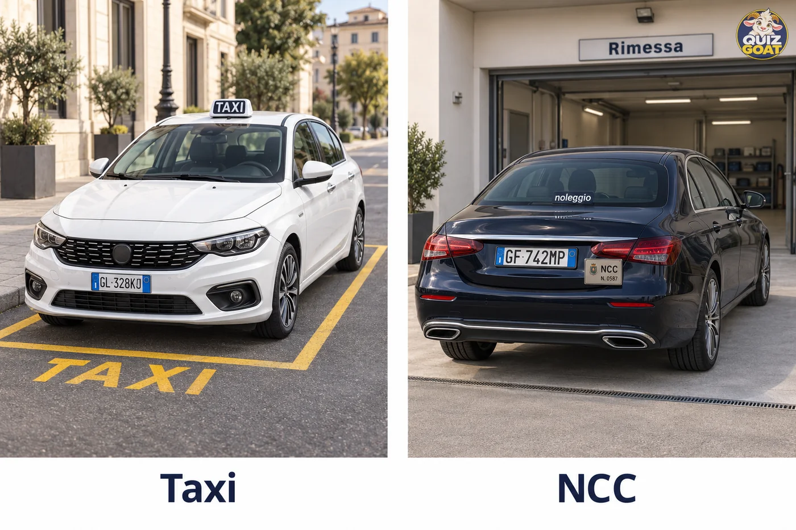

‹ Abilitazioni professionali
CAP KB
Il certificato di abilitazione professionale per guidare taxi e auto a noleggio con conducente.
- Requisiti
- 21 anni, patente B valida e l’attestato di un corso di primo soccorso, che puoi frequentare anche in autoscuola.
- Documenti
- patente in originale, con fotocopia fronte e retro
- certificato medico in bollo, rilasciato da non più di 3 mesi, con i requisiti richiesti per le patenti C e D
- certificato del medico di fiducia sui precedenti di salute
- Esame
- Teoria: 20 domande a risposta multipla in 30 minuti, al massimo 2 errori.
- Validità
- La visita medica si ripete ogni 5 anni, e comunque a ogni rinnovo della patente.

Queste informazioni riassumono il Codice della strada e le pagine del Ministero delle infrastrutture e dei trasporti, controllati a novembre 2026. Importi e casi particolari cambiano nel tempo: per la tua pratica chiedi in sede.
Preventivo gratuito
Senza impegno. Scrivici o passa in sede: ti diciamo costi, tempi e che cosa portare.